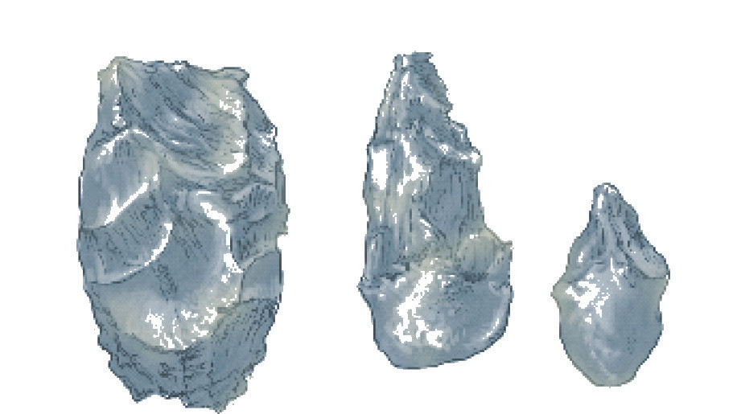
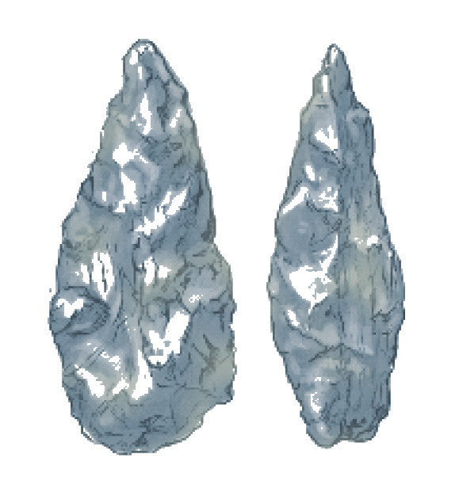

Figure 2.2: Oldowan stone tools
Acheulian stone tools: These tools were discovered first at St. Acheul in France. They were more advanced than the Oldowan tools because they were made by breaking small sharp pieces of stones from hard, bigger rocks. This process is called flaking. The Acheulian stone tools included hand axes, cleavers, and picks. They were used for heavy-duty activities such as falling down trees, killing animals and processing meat. The maker of Acheulian stone tools was Homo erectus. Acheulian stone tools are found in Isimila, Olduvai Gorge, Lake Natron and Laetoli in Tanzania and around Lake Turkana in Kenya. Apart from making stone tools, Homo erectus lived together in small camps, hunted animals, and shared food. Figure 2.3 shows samples of Acheulian stone tools.

Figure 2.3: Acheulian stone tools
Physical changes in human beings during the Old Stone Age
In the Early Stone Age, the physical changes in human beings involved three stages of evolution: Australopithecus, Homo habilis and Homo erectus.
Australopithecus
Australopithecus was characterised by a hairy body, which helped to protect them from cold; large jaws and teeth; and a small brain size but larger than that of chimpanzees, which was about 400 cranial capacity (cc). Their bodies were like those of chimpanzees. Their legs and pelvis were like those of human beings. In addition, the body size of women was smaller than that of men. This creature walked